Vue de J1, lacet 45°, zoom ×1,5, 1920×1080, loupe ×3 autour de la fusée (640×360 agrandis au plus proche). À gauche l’illustration « Créer en ligne », au milieu le défaut (Q34 : plein feu 2 s), à droite --fusee-rouge-long (Q35 : plein feu 4 s, braise 8 s, vie 20 s). L’âge est piloté en temps de jeu (photographe sous --fixed-fps 60) et lu sur la fusée. Rendu logiciel du cloud (llvmpipe) : valable pour les couleurs et les comptes de pixels, pas pour la cadence ni l’éblouissement. Chaque vignette ouvre l’image entière.
Illustration, mêmes mesures : sol (x 240-560, y 480-560) teinte 353.3°, saturation 0.69 ; cœur de la flamme (255, 255, 255).
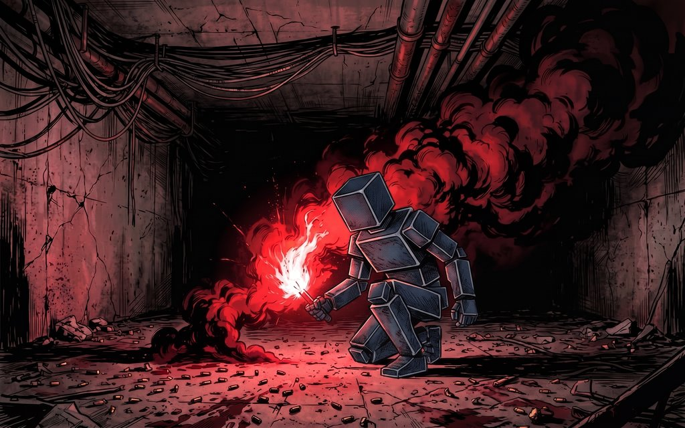
| sol éclairé | teinte 3.9° · saturation 0.65 · luminance 43 |
|---|---|
| point de braise | (230, 230, 229) · teinte 60° · sat. 0.00 |
| fumée visible | 10 % du disque |
| noir absolu | ⚠️ 11730 pixels (11730 dans le disque de fumée, max 5/255) (réf. 1699283 px noirs, 101708 instables écartés) |
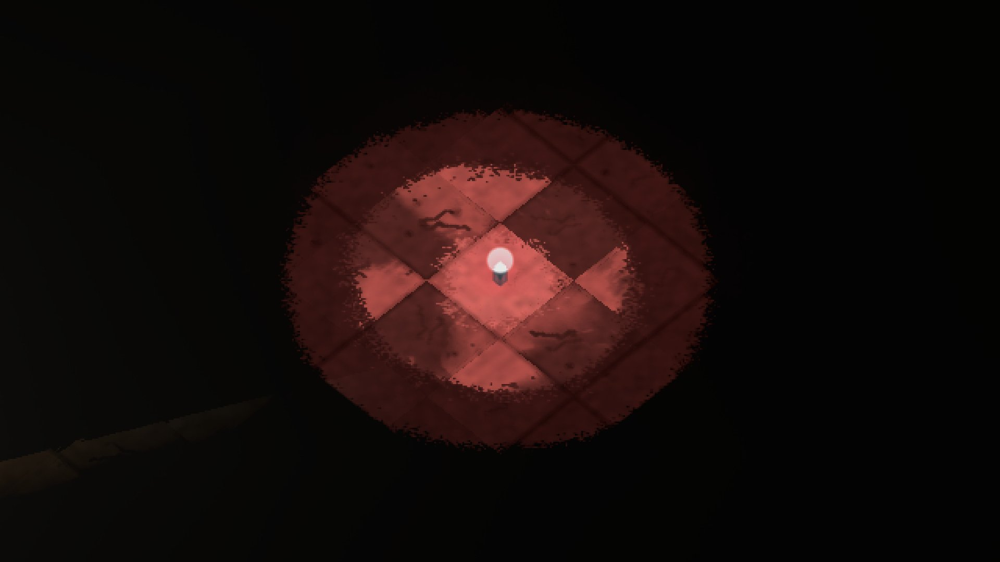
| sol éclairé | teinte 3.9° · saturation 0.65 · luminance 43 |
|---|---|
| point de braise | (230, 230, 229) · teinte 60° · sat. 0.00 |
| fumée visible | 10 % du disque |
| noir absolu | ⚠️ 11730 pixels (11730 dans le disque de fumée, max 5/255) (réf. 1699283 px noirs, 101708 instables écartés) |
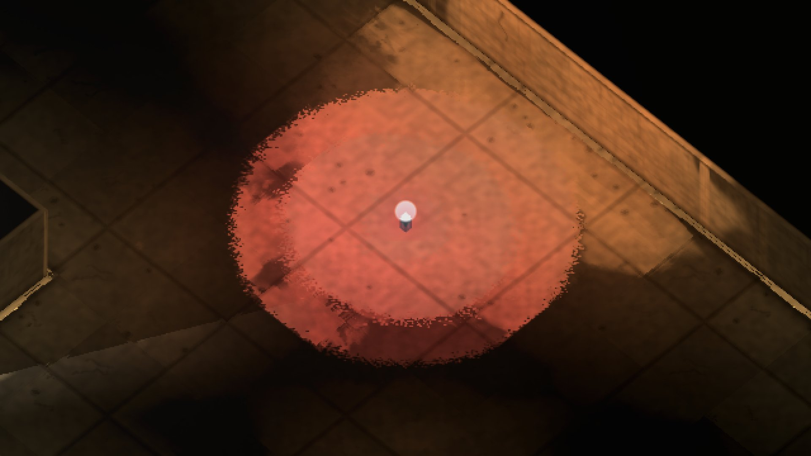
| sol éclairé | teinte 12.4° · saturation 0.65 · luminance 105 |
|---|---|
| point de braise | (230, 230, 229) · teinte 60° · sat. 0.00 |
| fumée visible | 26 % du disque |
| noir absolu | ⚠️ 13261 pixels (13257 dans le disque de fumée, max 22/255) (réf. 927760 px noirs, 38086 instables écartés) |
| sol éclairé | teinte 12.4° · saturation 0.65 · luminance 105 |
|---|---|
| point de braise | (230, 230, 229) · teinte 60° · sat. 0.00 |
| fumée visible | 26 % du disque |
| noir absolu | ⚠️ 13261 pixels (13257 dans le disque de fumée, max 22/255) (réf. 927775 px noirs, 38098 instables écartés) |
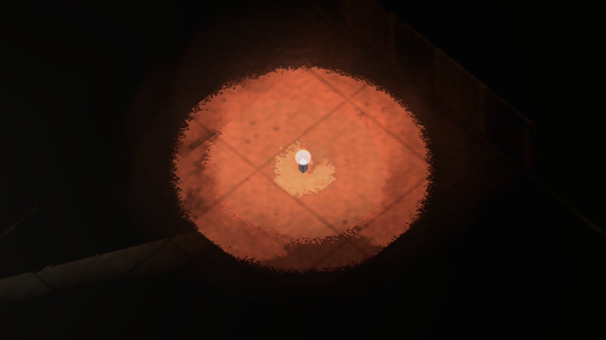
| sol éclairé | teinte 14.9° · saturation 0.69 · luminance 101 |
|---|---|
| point de braise | (230, 230, 229) · teinte 60° · sat. 0.00 |
| fumée visible | 20 % du disque |
| noir absolu | ⚠️ 45306 pixels (45306 dans le disque de fumée, max 58/255) (réf. 1834045 px noirs, 455 instables écartés) |
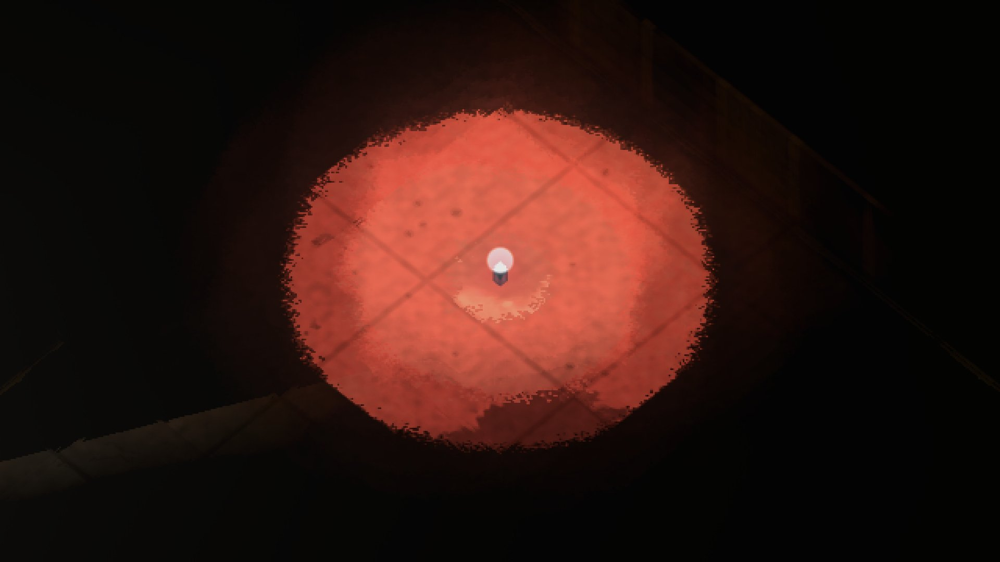
| sol éclairé | teinte 8.1° · saturation 0.68 · luminance 102 |
|---|---|
| point de braise | (230, 230, 229) · teinte 60° · sat. 0.00 |
| fumée visible | 22 % du disque |
| noir absolu | ⚠️ 48006 pixels (48006 dans le disque de fumée, max 62/255) (réf. 1833990 px noirs, 459 instables écartés) |
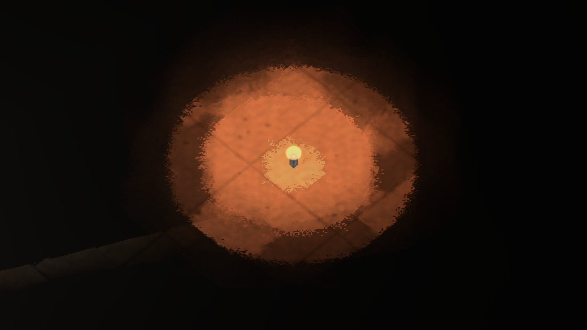
| sol éclairé | teinte 19.4° · saturation 0.71 · luminance 91 |
|---|---|
| point de braise | (230, 216, 152) · teinte 49° · sat. 0.34 |
| fumée visible | 21 % du disque |
| noir absolu | ⚠️ 40460 pixels (40460 dans le disque de fumée, max 70/255) (réf. 1813987 px noirs, 17954 instables écartés) |
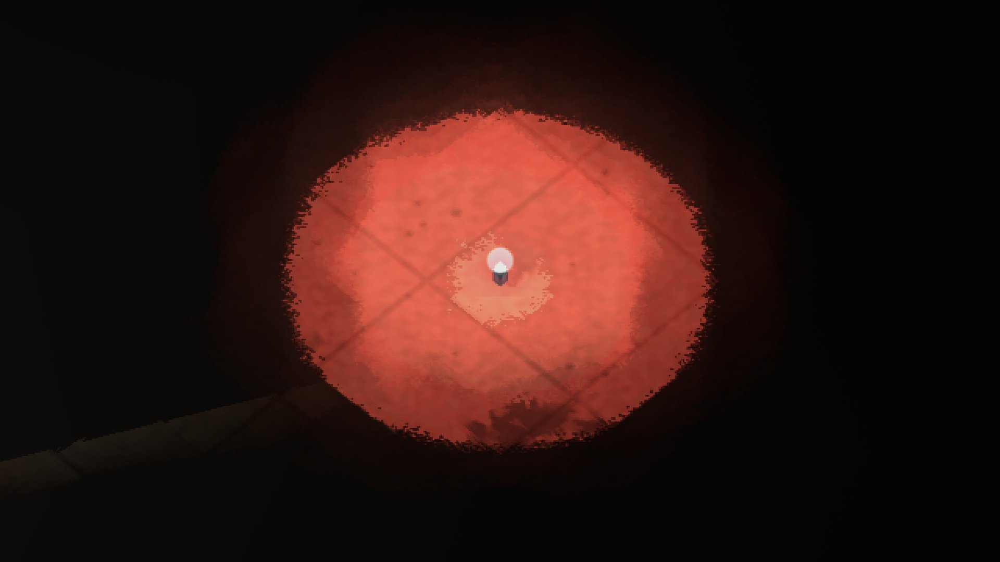
| sol éclairé | teinte 7.8° · saturation 0.68 · luminance 102 |
|---|---|
| point de braise | (230, 230, 229) · teinte 60° · sat. 0.00 |
| fumée visible | 24 % du disque |
| noir absolu | ⚠️ 45689 pixels (45689 dans le disque de fumée, max 92/255) (réf. 1813871 px noirs, 17931 instables écartés) |
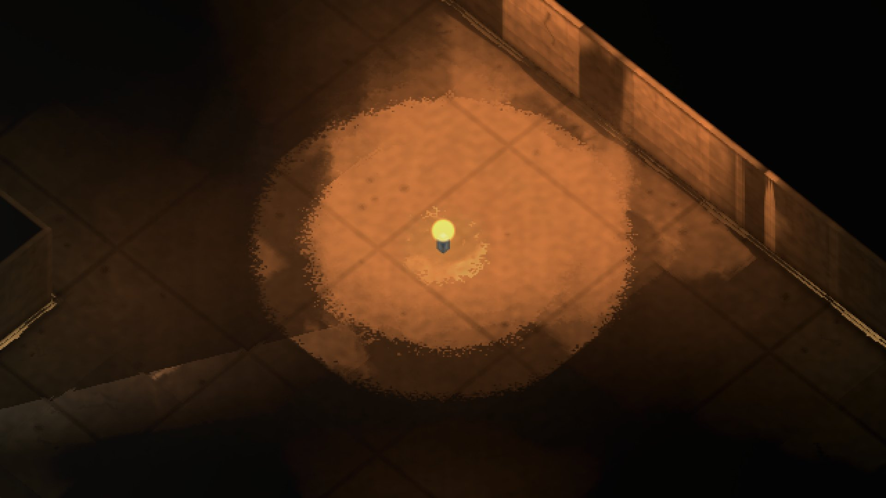
| sol éclairé | teinte 24.5° · saturation 0.71 · luminance 98 |
|---|---|
| point de braise | (230, 230, 146) · teinte 60° · sat. 0.36 |
| fumée visible | 32 % du disque |
| noir absolu | ⚠️ 6534 pixels (6528 dans le disque de fumée, max 23/255) (réf. 900046 px noirs, 31174 instables écartés) |
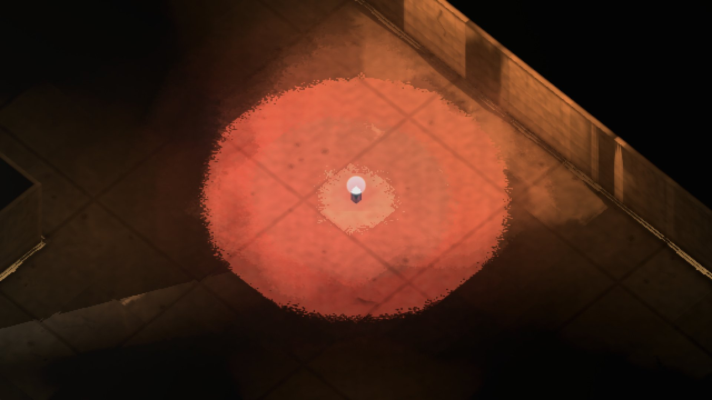
| sol éclairé | teinte 11.5° · saturation 0.67 · luminance 114 |
|---|---|
| point de braise | (230, 230, 229) · teinte 60° · sat. 0.00 |
| fumée visible | 35 % du disque |
| noir absolu | ⚠️ 6522 pixels (6522 dans le disque de fumée, max 32/255) (réf. 900069 px noirs, 31169 instables écartés) |
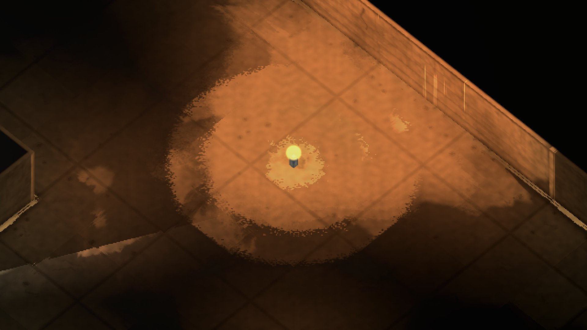
| sol éclairé | teinte 24.7° · saturation 0.71 · luminance 104 |
|---|---|
| point de braise | (230, 230, 146) · teinte 60° · sat. 0.36 |
| fumée visible | 39 % du disque |
| noir absolu | ⚠️ 16131 pixels (16131 dans le disque de fumée, max 32/255) (réf. 1285342 px noirs, 184191 instables écartés) |
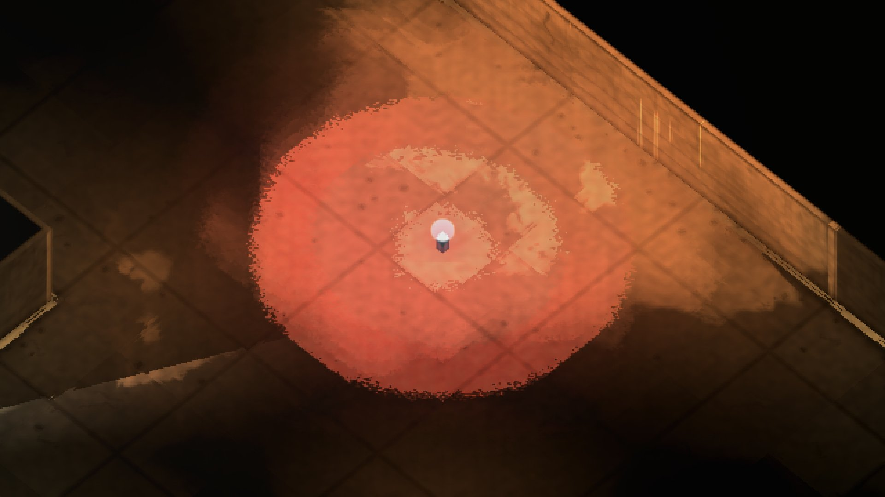
| sol éclairé | teinte 13.7° · saturation 0.66 · luminance 120 |
|---|---|
| point de braise | (230, 230, 229) · teinte 60° · sat. 0.00 |
| fumée visible | 42 % du disque |
| noir absolu | ⚠️ 16188 pixels (16188 dans le disque de fumée, max 68/255) (réf. 1285284 px noirs, 184143 instables écartés) |
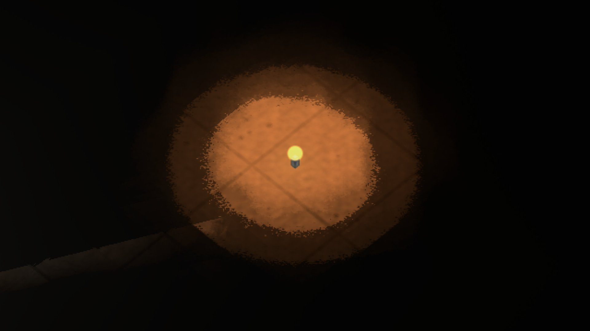
| sol éclairé | teinte 24.6° · saturation 0.73 · luminance 70 |
|---|---|
| point de braise | (230, 230, 146) · teinte 60° · sat. 0.36 |
| fumée visible | 15 % du disque |
| noir absolu | ⚠️ 31342 pixels (31342 dans le disque de fumée, max 33/255) (réf. 1835561 px noirs, 0 instables écartés) |
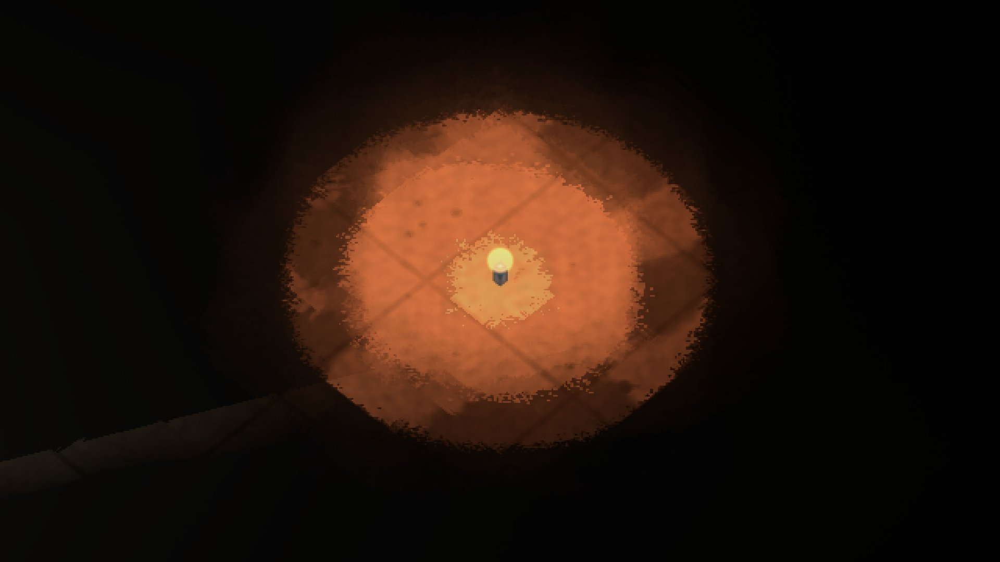
| sol éclairé | teinte 19.3° · saturation 0.72 · luminance 90 |
|---|---|
| point de braise | (230, 216, 151) · teinte 49° · sat. 0.34 |
| fumée visible | 19 % du disque |
| noir absolu | ⚠️ 44190 pixels (44190 dans le disque de fumée, max 62/255) (réf. 1835286 px noirs, 0 instables écartés) |
| sol éclairé | teinte 25.3° · saturation 0.70 · luminance 110 |
|---|---|
| point de braise | (230, 230, 146) · teinte 60° · sat. 0.36 |
| fumée visible | 31 % du disque |
| noir absolu | ⚠️ 7846 pixels (7844 dans le disque de fumée, max 24/255) (réf. 928848 px noirs, 45151 instables écartés) |
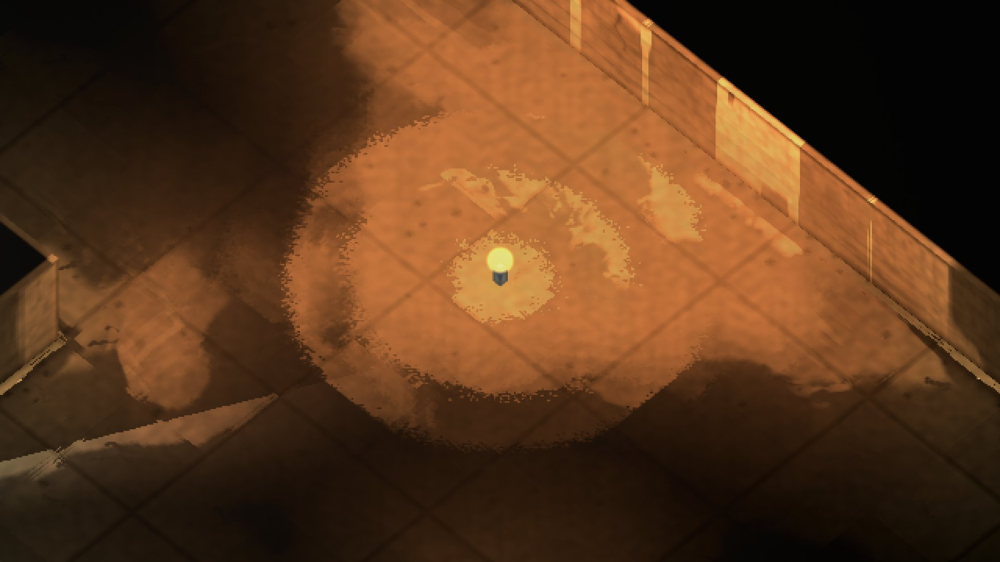
| sol éclairé | teinte 25.3° · saturation 0.70 · luminance 110 |
|---|---|
| point de braise | (230, 230, 146) · teinte 60° · sat. 0.36 |
| fumée visible | 31 % du disque |
| noir absolu | ⚠️ 7845 pixels (7844 dans le disque de fumée, max 24/255) (réf. 928930 px noirs, 45042 instables écartés) |